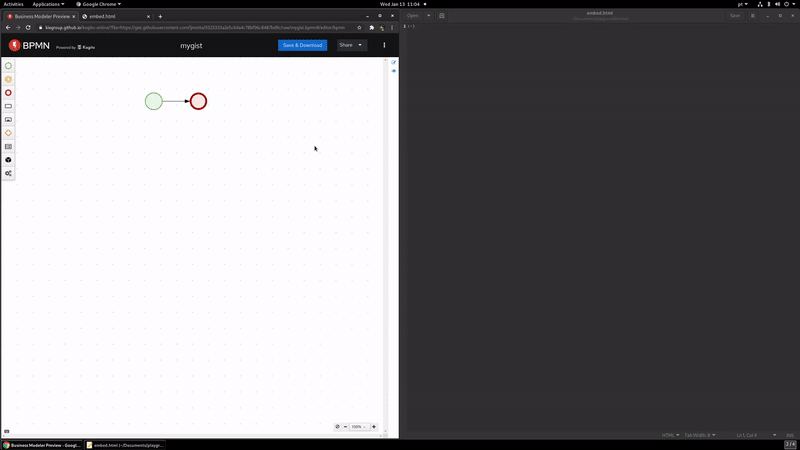

Embed your BPMN and DMN models!
In the last release, we have introduced a new feature that will enable you to embed your BPMN and DMN models on any web application with an iframe. Let’s have a better look at it.
We have updated our toolbar on the Business Modeler Preview, and now under the “Share” menu, there is an “Embed” option.

Clicking on it will open a modal containing the Embed options.

The first option “Current content,” will create an Embed code with a static model, which can’t be changed after it’s embedded. In that case, if it’s necessary to update your model, you’ll need to go through this process again, generating a new Embed code and pasting it on your application.
To enable the “GitHub gist” option, you need to currently be with an open gist on the Business Modeler Preview. If you’re not, you can easily create a new one using the “Gist it!” option on the “Share” menu. To enable this option, it’s a requirement to set up your GitHub token. Remember that the token needs to have the “gist” permission.
Back to our “Embed” modal, the “GitHub gist” option will create an Embed code using the gist content, and the embed model will reflect the contents of the gist, so if the gist is updated, the embedded model is too, keeping the gist and the generated embed sync. Note that it can take a few minutes to update due to the GitHub gist cache effectively.

Clicking on the copy icon will copy the Embed code directly to your copy area to paste on any place you desire. Here is a code example generated by “GitHub gist”:
<iframe width="100%" height="100%" srcdoc="<!DOCTYPE html> <html lang="en"> <head> <script
src="https://kiegroup.github.io/kogito-online/standalone/bpmn/index.js"></script> <title></title> <style>
html, body, iframe { margin: 0; border: 0; padding: 0; height: 100%;
width: 100%; } </style> </head> <body> <script>
fetch("https://gist.githubusercontent.com/ljmotta/9323333a2e5c64a4c78bf96c8487bd9c/raw/mygist.bpmn")
.then(response => response.text()) .then(content => BpmnEditor.open({container: document.body, readOnly: true,
initialContent: content, origin: "*" })) </script> </body> </html>"></iframe>And here is a small video running this code:

Now you can start using this option in any application that supports an iframe element. You can make tutorials, demos, examples, or even documentation!
Thanks a lot for reading, and stay tuned for more awesome updates.